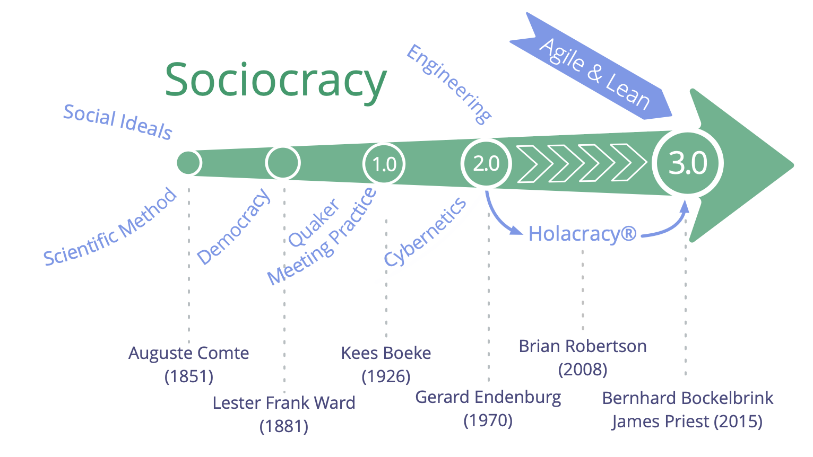

From tension to agreement with Sociocracy 3.0
Earlier this month I started my new job at a small consultancy. During my onboarding I noticed something that I thought could be improved. So I figured I should come up with a proposal to address that. It also made me wonder how me proposing this improvement would go over with my new colleagues. And then I remembered I learned about a good way of doing this in a workshop1 at the 2016 XP Days Benelux conference. That workshop was about Sociocracy 3.0 (S3 for short). So I ended up proposing two things in the meeting: my improvement, but also a way to come to an agreement about my proposal.
The reactions to my proposal about how to come to agreements, were mostly positive. One person asked a very good question though: “Is this solving a problem we are having? Or is this a solution looking for a problem? What would be the reasons for adopting this?” In response I expanded on my reasons for wanting this and we decided to give it a try. My dual proposal helped here: let’s try the S3 patterns I shared on the improvement I proposed.
Looking back, I’m happy with my reply to those questions and I also feel I can do better. Which makes this the perfect opportunity for my first blog post of 2022. I’ll start with a brief introduction on Sociocracy 3.0, then I’ll share the proposal I made based on S3, and finally I’ll talk about why I like this form of decision-making.
What is Sociocracy 3.0?
Sociocracy 3.0 (S3) describes itself as a
social technology for evolving agile and resilient organizations at any size, from small start-ups to large international organizations.
As the “3.0” suggests, there is some history to Sociocracy, as illustrated by this diagram from the S3 site:

The first version of Sociocracy 3.0 was published in 2015 by James Priest and Bernhard Bockelbrink - with Liliana David joining the team soon after. On the history page they describe their intent was co-creating
a body of Creative Commons licensed learning resources, synthesizing ideas from Sociocracy, Agile and Lean.
Sociocracy 3.0 consists (at the time of this writing) of 7 principles and 74 patterns organized into 10 categories. That’s a lot, so luckily they also created a map of S3 that gives an overview of the principles and patterns.
Patterns in S3
If we want to talk about S3 in practice, we need to talk about patterns:
A pattern is a process, practice or guideline that serves as a template for successfully responding to a specific kind of challenge or opportunity.
Patterns are modular and adaptable, can be used independently, and are mutually reinforcing, complementing one another when used in combination. S3 patterns can be evolved and adapted to address your specific needs.2
That’s still a lot to digest, so I summarized that for myself as: patterns are heuristics for self-organization.
From tension to agreement
The proposal I presented to my colleagues was (rather recursively) about how to come to an agreement about a proposal. Most of the relevant patterns to this are from the Co-Creation and Evolution Sense-Making and Decision-Making3 category. They describe how to get from a tension to a driver, then to a proposal to finally arrive at an agreement.
Tension
A tension is
A personal experience, a symptom of dissonance between an individual’s perception of a situation, and their expectations or preferences.4
Those first three words, “a personal experience”, are important. Sometimes a tension is based on a misconception. Other times they are personal. That does not make the tension invalid, but it does mean that the organization as a whole does not need to address the tension. Only when a tension is relevant on that level, i.e. when they are challenges or opportunities for the organization, they should become a driver.
Driver
A driver is
A person’s or a group’s motive for responding to a specific situation.5
A simple way to describe a driver is to split it up into two parts:
- Describe the current situation and the effect it has on the organization.
- Describe the organization’s need and the impact of attending to that need.
That’s rather abstract, so the S3 site provides the following example:
“The kitchen is in disorder: there are no clean cups, the sink is full of dishes and it’s not possible to quickly grab a coffee and get right back to work. We need the kitchen in a usable state so we can stay focused on our work.”
Notice that this description says nothing about how to meet the need of having the kitchen in a usable state. As the definition above states: drivers are about a specific situation and why that situation needs addressing. Drivers don’t specify how the situation needs to be addressed.
Forming a proposal
To get from a driver to a proposal, there’s the Proposal Forming pattern. For the full description, please follow that link, while I present a summarized version here.
The first thing to do is check if everyone consents to the driver. Consent is one of the seven principles of Sociocracy 3.0 and central to how decisions are made in S3:
Adopting the principle of consent invites a change of focus in decision making, shifting intent from trying to reach agreement - can everyone agree with this? - toward the practice of deliberately checking for objections - are there any arguments that reveal why this is not good enough, safe enough or that there are worthwhile ways to improve?6
Once there is consent to the driver, it’s time for questions. Some questions will help deepen shared understanding of the driver; other questions will reveal considerations related to possible solutions. If possible, questions are answered immediately. If not, they are collected and prioritized as input for the proposal. Finally, after all questions have been addressed, you collect ideas as possible ingredients for a proposal.
Those questions, considerations, and ideas, then become the input for designing a proposal, which usually is done by a smaller group of tuners.
Agreement
Proposals become agreements similarly to how agreement on a driver is reached: through the pattern of Consent Decision Making. The test for a proposal is if it’s good enough for now and safe enough to try. If so, it becomes an agreement.
The key part of this pattern is asking everyone if they consent to the proposal, or if they have concerns or objections. This can be done through hand signals so everyone can express their position at the same time.
The difference between a concern and an objection is that an objection is an argument that the proposal is not good enough yet or safe enough yet. It’s an argument, so there is reasoning or evidence to back it up. A concern is similar to an objection, but it can’t be backed up in that way. For that reason, objections are blockers to coming to an agreement; concerns are not. That does not mean however, that concerns are ignored. Sometimes concerns can be alleviated by making a change to the proposal. If that does not work out, they can be recorded in the agreement near the evaluation criteria.
Once all objections have been resolved, you have successfully created an agreement and it’s time to celebrate!
We have an agreement, now what?
Of course, it doesn’t end with creating agreements. Agreements should be recorded. More importantly, they should be evaluated reguarly, so they can evolve.
As to people following agreements, S3 strongly believes in self-accountability:
Overall accountability for an agreement lies with the people that make them.7
Finally, there’s a S3-pattern explicitly about breaking agreements. Sometimes the benefits of breaking an agreement outweigh the cost of waiting to change the agreement.
What I like about these patterns
When I started listing out the things I like about these (and related) patterns, I ended up with quite a few. I like how it’s build around the principle of equivalence and involving those affected. I like how objections are considered as a gift, as someone sharing wisdom to help improve the proposal. And I really like the ideas of consent and of “good enough for now, safe enough to try”. Having listed those, that leaves me with three more things I like, on which I like to spend a few more sentences.
Start with exploring the driver
Before thinking of proposals and solutions, first everyone needs to consent to the driver. It makes you focus on the problem, on the need of the organization first. It lets you filter out drivers and tensions that are not on an organizational level. People provide considerations and ideas not based on some draft proposal, but based only on the driver.
I think this allows an organization to keep a good handle on its drivers and to respond only to drivers that need responding to. Imagine the alternative. Someone comes with a proposal to address a perceived driver. And the reaction from the group is not only that the proposal won’t be accepted, but also that no alternative proposal needs to be created, because there isn’t an organizational need. I suspect that this is how a lot of on-paper-only agreements are created in organizations. The proposals are accepted but mostly ignored, to avoid the conflict of so thoroughly rejecting the proposal.
Agreements are a result of co-creation
Often people respond to proposals from an adversarial stance. The author of the proposal has to convince the others of its merits and defend the proposal against their criticisms. The overall attitude is more a “no, but…” than a “yes, and”. As a result, the one with the proposal might spend a lot of time preparing the proposal, trying to anticipate as many of the criticisms as possible.
That’s very different from S3’s co-creation of agreements. As mentioned above: raising an objection is a gift, it’s contributing a means to improve the proposal.
Creating a positive space
“Positive space” is probably a neologism on my part. It’s inspired by the difference between positive and negative freedom. Negative freedom is the absence of obstacles, constraints, and restrictions that would otherwise prevent you to do something. Positive freedom relates to the presence of certain things that allow you to do something.
To illustrate with a great quote by Anatole France:
“In its majestic equality, the law forbids rich and poor alike to sleep under bridges, beg in the streets and steal loaves of bread.”
With “postive space” I mean a space that has positive liberty. As I tweeted a few days ago:
“Creating space for others can take very different forms. One option is to create a space that is no more than a void others are allowed to fill. Another option is to create a space that actually welcomes and supports others to contribute.”
I think Sociocracy 3.0 does an excellent job here. Instead of the negative space of “If you’d like some things to be different, just bring in a proposal.”, it creates a positive space in which people can collaborate in moving from a tension to an agreement.
-
That workshop was facilitated (co-facilitated?) by Jef Cumps, who wrote “Sociocracy 3.0 - The Novel”. It’s also available in Dutch. ↩
-
The name of the category was changed on 27 January 2022. ↩